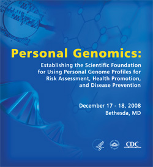

Purpose
This 2-day workshop, cosponsored by CDC and NIH, explored the type of scientific foundation that is crucially needed to make the promise of personal genomics a reality. The workshop participants examined how the integration of genomics into personalized health can follow an evidence-based process. The process for using genomic applications in personalized healthcare (e.g. pharmacogenomics, early detection markers, testing in clinical trials) was discussed.
A multidisciplinary working group reviewed and discussed the scientific basis for using genomic profiles in risk assessment and disease prevention, identified gaps in knowledge, and explored how those gaps in our knowledge base can be filled through research. The participants addressed –from consumer and provider perspectives–the scientific information needed to evaluate and interpret results of genomic profiles and their added value to promote health and prevent common diseases compared to traditional nongenetic approaches. A published peer-reviewed paper will summarize the discussion and recommendations for a multidisciplinary research agenda. This paper will be used to disseminate the information to providers and consumers.
Back to top
Agenda and Presentations
A workshop sponsored by the National Cancer Institute (NCI), the National Human Genome Research Institute (NHGRI), the National Heart, Lung and Blood Institute (NHLBI), the Office of Behavioral and Social Sciences Research (OBSSR), and the Centers for Disease Control and Prevention (CDC).
Click on presenter’s name to view presentations
December 17, 2008 |
Session I: Genome Profiles, Risk Assessment, and Personalized Health: The Basics
Moderator: Gregory Downing, HHS |
| 8:30 a.m. - 8:45 a.m. |
Welcome
Robert Croyle, NCI
Alan Guttmacher, NHGRI
Denise Simons-Morton, NHLBI |
| 8:45 a.m. - 8:50 a.m. |
Meeting Objectives
Muin Khoury, CDC and NCI |
| 8:50 a.m. - 9:10 a.m. |
Personal Genomics: A Systematic Review of Current Practices
Kenneth Offit, Memorial Sloan-Kettering Cancer Center |
| 9:10 a.m. - 9:30 a.m. |
Health Risk Assessment: How It Works in Other Fields and the Potential Impact of Genomics
Mitchell Gail, NCI |
| 9:30 a.m. - 9:50 a.m. |
What Information Do Consumers Want?
Sharon Terry, Genetic Alliance
Susan Friedman, FORCE |
| 9:50 a.m. - 10:10 a.m. |
What Information Do Primary Care Providers Need? What Is the Role of Evidence-Based Guidelines?
Gregory Feero, NHGRI |
| 10:10 a.m. - 10:30 a.m. |
Discussion |
| 10:30 a.m. - 11:00 a.m. |
Break |
Session II: The Scientific Foundation for Which Genetic Variants Should Be Included in Genome Profiles: The Credibility of Genetic Associations
Moderator: Teri Manolio, NHGRI |
| 11:00 a.m. - 11:20 a.m. |
Navigating the Epidemiology of the Human Genome
Marta Gwinn, CDC |
| 11:20 a.m. - 11:40 a.m. |
Assessing Cumulative Evidence in Genetic Associations
John Ioannidis, University of Ioannina School of Medicine and Tufts-New England Medical Center |
| 11:40 a.m. - 12:10 p.m. |
Genome-Wide Meta Analysis: Promises and Pitfalls
John Witte, University of California, San Francisco |
| 12:10 p.m. - 12:45 p.m. |
What Variants Are Included in Genome Profiles and How Are Disease Risks Calculated? Is There an Industry-Wide Standard?
Amy Miller, Personalized Medicine Coalition
Michele Cargill, Navigenics
Linda Avey, 23andMe
Jeffrey Gulcher, deCODE Genetics |
| 12:45 p.m. - 1:30 p.m. |
Lunch (on your own) |
Session III: The Scientific Foundation for Establishing Clinical Validity and Utility of Genome Profiles - Part 1
Moderator: Kay Wanke, OBSSR |
| 1:30 p.m. - 1:50 p.m. |
Interdisciplinary Evaluation of Genome Profiles. How Should Clinical Validity and Utility Be Defined? What Evidence Is Needed To Establish Clinical Validity and Utility?
Steven Teutsch, Merck & Co., Inc. |
| 1:50 p.m. - 2:10 p.m. |
How Do We Assess the Added Value of Genetic Information in Predicting Disease Compared to Traditional Risk Factors?
Cecile Janssens, Erasmus University, The Netherlands |
| 2:10 p.m. - 2:30 p.m. |
Scientific Evaluation of the Impact of Interventions Associated With Genetic Risk Factor Information
Barry Davis, University of Texas School of Public Health at Houston |
| 2:30 p.m. - 3:00 p.m. |
Discussion |
| 3:00 p.m. - 3:30 p.m. |
Break |
Session IV: Scientific Foundation for Establishing Clinical Validity and Utility of Genome Profiles - Part 2
Moderator: Mark Greene, NCI |
| 3:30 p.m. - 3:50 p.m. |
How Can We Assess the Value of Genetic Information: Nondirective Counseling, Motivational Counseling, and Health Education for Common Diseases?
Angela Trepanier, Wayne State University School of Medicine |
| 3:50 p.m. - 4:10 p.m. |
Principles of Health Marketing Research and Practice: How Do They Apply to Genomics?
Jay Bernhardt, CDC |
| 4:10 p.m. - 4:30 p.m. |
Does Genetic Information Change Behavior? Examples of Clinical Utility Research
Colleen McBride, NHGRI |
| 4:30 p.m. - 5:00 p.m. |
Discussion |
| 7:00 p.m. |
Dinner – Meritage Restaurant |
December 18, 2008 |
Session VI: Models for Conducting Translational Research on Genome Profiles
Moderator: Gregory Feero, NHGRI |
| 8:30 a.m. - 8:50 a.m. |
How Can We Assess the Clinical Validity and Utility of Genome Profiles in Risk Assessment and Control of Colorectal Cancer?
David Ransohoff, University of North Carolina at Chapel Hill |
| 8:50 a.m. - 9:10 a.m. |
How Can We Assess the Clinical Validity and Utility of Genome Profiles in Risk Assessment and Control of Alzheimer’s Disease?
Robert C. Green, Boston University |
| 9:10 a.m. - 9:30 a.m. |
How Can We Assess the Clinical Validity and Utility of Genome Profiles in Risk Assessment and Control of Cardiovascular Disease?
Philip Greenland, Northwestern University |
| 9:30 a.m. - 9:50 a.m. |
How Can We Assess the Clinical Validity and Utility of Genome Profiles in Risk Assessment and Control of Prostate Cancer?
Jianfeng Xu, Wake Forest University |
| 9:50 a.m. - 10:15 a.m. |
General Discussion
- How do we define clinical validity and utility for genome profiles?
- What scientific disciplines are needed for evaluation of clinical validity and utility of genome profiles?
- When do we need clinical trials?
- What trials are needed?
- Does genetic information provide more information than traditional risk factors?
- Should the use of family history as an alternative or complementary tool be considered?
- What collaborative processes are needed to build this evidence base?
- What study designs are needed?
- Do these studies require return of results to participants?
|
| 10:15 a.m. - 10:30 a.m. |
Break |
Session V: Case Studies and General Discussion of Clinical Validity and Utility
Moderator: Michael Lauer, NHLBI |
| 10:30 a.m. - 10:50 a.m. |
Scientific Evaluation of the Clinical Validity and Utility of Genetic and Genomic Risk Factor Information
Geoffrey Ginsburg, Duke University |
| 10:50 a.m. - 11:10 a.m. |
National Institutes of Health GEI Genomics Translational Research
Paul Kimmel, NIDDK |
| 11:10 a.m. – 11:30 a.m. |
CDC Genomics Translational Research Agenda
Ralph Coates, CDC |
| 11:30 a.m. - 11:50 a.m. |
Implications for Public Engagement, Policy, and Oversight While the Science Accumulates
Kathy Hudson, Johns Hopkins University |
| 11:50 a.m. - 12:30 p.m. |
Models for Conducting Translational Research on Genome Profiles
George Church, PersonalGenomes.org and the Broad Institute
Jeffrey Gulcher, deCODE Genetics
Linda Avey, 23andMe
Amy DuRoss, Navigenics |
| 12:30 p.m. - 1:30 p.m. |
Lunch (on your own) |
Session VII: Panel Discussions and Next Steps for Research and Practice Agenda
Discussion Moderator: Muin Khoury, CDC and NCI |
| 1:30 p.m. - 2:00 p.m. |
Discussants:
Francis Collins, Former Director, NHGRI, and Kari Stefansson, deCODE Genetics |
| 2:00 p.m. - 2:45 p.m. |
Reactive Panel:
John Ioannidis, Colleen McBride, Stephen Chanock, Sharon Terry, and Sharon Kardia
- Is there consensus on scientific standards to include in a genome profile?
- What research studies are needed (observational and clinical trials) to evaluate the clinical validity and utility of genome profiles?
- What reporting guidelines should be used to research participants in these studies?
- Is there a collaborative public-private model for conducting research on the clinical validity and utility of genome profiles?
- What steps are needed to develop consumer and provider decision support tools?
- What should be the policy and oversight environment while research on genome profiles is being conducted?
- What information should be given to providers and consumers before and after testing?
- What is the potential impact on health disparities?
- What are the next steps and action items?
|
| 2:45 p.m. – 3:00 p.m. |
Short Recaps of What We Have Heard |
| 3:00 p.m. |
Adjournment |
Back to top
Meeting Folder Materials
View participant list
Letting the Genome out of the Bottle- Will We Get Our Wish?
A Critical Appraisal of the Scientific Basis of Commercial Genomic Profiles Used to Assess Health Risks and Personalize Health Interventions
The Genome Gets Personal- Almost
Genomic Profiles for Disease Risk: Predictive or Premature?
Putting science over supposition in the arena of personalized genomics
Personal Genomics and Industry Standards: Scientific Validity (statement assembled by the Personalized Medicine Coalition)
Back to top
Proceedings
Recommendations Released for Strengthening the Science Base of Personal Genomics
Extensive meeting summary
Back to top
|